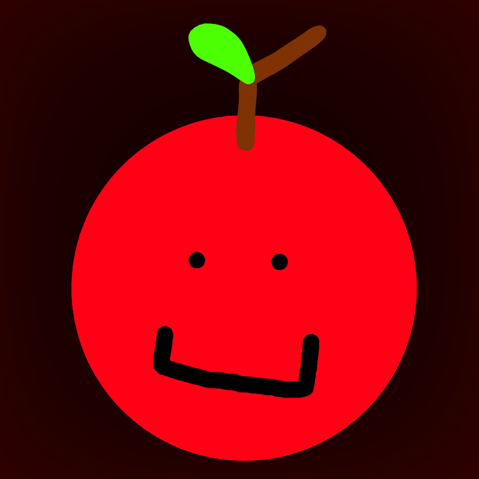

01 / Agents
Agent systems
Multi-session Claude Code setups with a coordinator, role agents, handovers, schedules and guardrails. They run around the clock on a cloud VM I manage myself.
CS student · ETH Zürich / Vienna → Zürich
I’m Qiang Luo, known online as ktr0a. I study Computer Science at ETH Zürich, design multi-agent setups, study tools and Android apps with Claude Code, and run Applino, a YouTube channel with 160k+ subscribers.
[01] What I do
I like problems with moving parts: systems that have to keep working when nobody is watching, tools that remove friction from a day, and stories that have to land with real people.
01 / Agents
Multi-session Claude Code setups with a coordinator, role agents, handovers, schedules and guardrails. They run around the clock on a cloud VM I manage myself.
02 / Product
TypeScript, Kotlin and Python tools that get used every day: an Obsidian study cockpit, a handwriting app for my tablet, a personal finance analyzer.
03 / Audience
Applino: 160k+ subscribers and 13.7M+ views. I led a creative team of five, steered strategy with YouTube analytics, and helped grow two more channels.
[02] Selected work
Most of it was built in autumn 2026 with Claude Code as my pair. I design the architecture, set the constraints and review every change.
Multi-agent study system
The operating system of my first ETH semester. An Obsidian vault of about 690 notes, run by a team of Claude Code sessions: a coordinator plus role agents for planning, tracking and per-course exercise help. They hand work to each other through notes, a single sync job applies every change, an hourly git history records it, and strict academic-integrity rules mean hints only.
Private repo · walkthrough on request

Obsidian plugin · TypeScript
A calm study dashboard that reads my vault live. It has its own iCal parser (recurring, moved and cancelled events, time zones), Focus, Dashboard and Agenda layouts, and an optional Claude side panel that picks Haiku or Sonnet per question and shows tokens and cost for every answer. API keys stay in Obsidian’s keychain; tests run against frozen copies of real notes.
Private repo · walkthrough on request

Android · Kotlin
A distraction-free handwriting app for my 13″ tablet: low-latency ink, strokes stored as vectors, atomic saves and a versioned file format with migrations. One on-canvas button, PDF annotation and export, lasso and scribble-to-erase. Notebooks sync into the right course folders on Drive.
Private repo · walkthrough on request

YouTube · Creator · Team lead
A full production and growth operation. I led a creative team of five, iterated on content strategy through YouTube Studio analytics, and helped grow two other channels to 100k+ and 10k+.

Parses bank PDF exports, analyzes monthly spending and renders an interactive local dashboard. CLI-first, then a PDF parser and browser charts.
github.com/ktr0a/Finance-app ↗ Hackathon · GDG DevFest Linz 2025An AI grading assistant that gives teachers structured, consistent feedback on student essays. Built in about seven hours.
View on GitHub ↗ This site · Vanilla JSRebuilt live by a swarm of agents on every visit: canvas overlay, DOM typing engine, procedural WebAudio sound and a three.js hero.
You are here ✦More on GitHub
github.com/ktr0aFetching repositories…
[03] About
I learn by building. When I started at ETH I built myself a study system instead of a to-do list. I like calm interfaces, honest status lights, and products someone would actually use, not scrappy demos.
Before Zürich: civilian service in Vienna, a Matura at BG/BRG Schwechat, and teaching kids and teens 3D printing, laser cutting and microcontrollers at FabLab Niederösterreich.
[04] Track record
Maths, physics and programming contests, mostly as a team. They taught me to stay calm under a clock.
School: 13 / 134 in Vienna (top 10%). Classic: 45 / 184 in Vienna, 279 / 1360 Europe-wide.
Top 3 in Lower Austria three years running (2023–2025); top third nationally among 55–65 teams.
2nd in Lower Austria, 7th in Austria (2025).
4th of 19 teams, Vienna and Lower Austria region (2024).
[05] Stack
[06] Contact
Open to internships, collaborations and good conversations about agents, tooling or growing an audience.